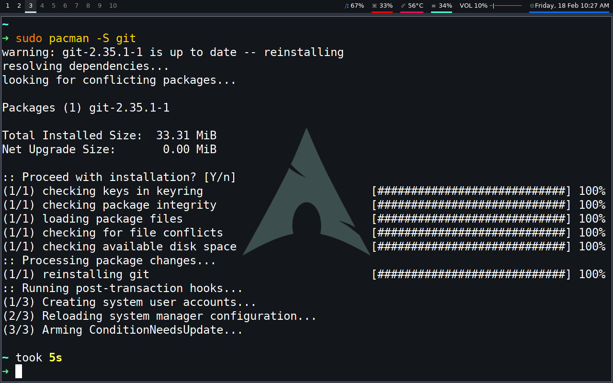
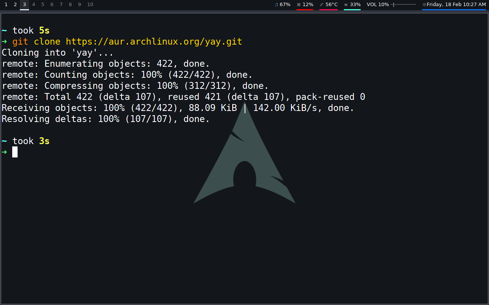
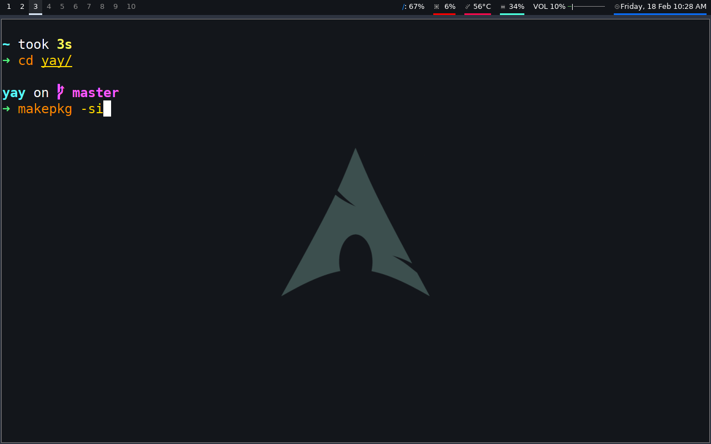
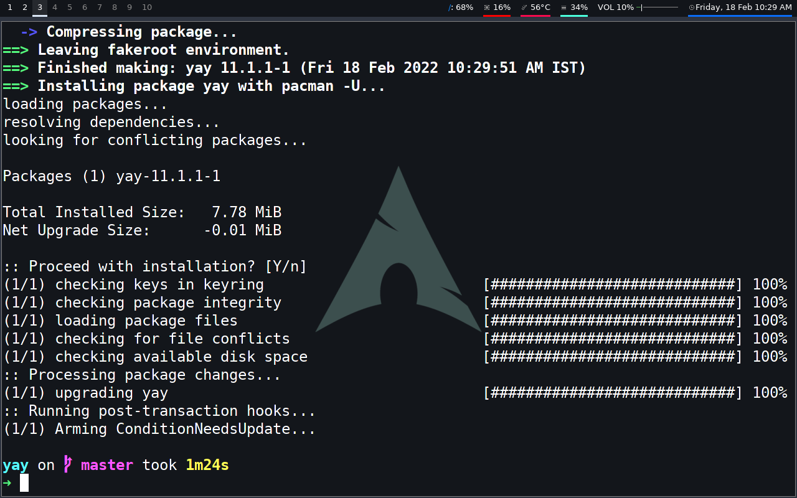

Yay is an AUR packages installer and like other AUR helpers, it is very useful because most of the packages are not available on the main repository, but it isn't installed by default.
In this article, we will show you how to install Yay on Arch Linux!
1. We'll first of all install Git because it isn't installed by default.
2. Now we'll clone the Yay PKGBUILD and other necessary files.
3. And now we'll finally install Yay package.
 